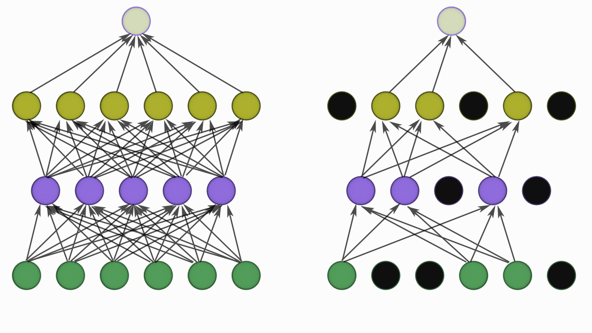

Regularization
A central problem in machine learning is how to make an algorithm that will perform well not just on the training data, but also on new inputs. The great OverFitting Problem.
Many strategies used in machine learning are explicitly designed to reduce the test error, possibly at the expense of increased training error. These strategies are known collectively as regularization.
One of the easiet to say but harder to do things is to increase the amount of training data.
Regularization increases training error but reduces generalization error hence more no of epochs are needed to get the desired result. Regularization helps to reduce overfitting of the model.
There are many regularization techniques used some but extra term in objective function and some but extra constraint on the model.
- L1/L2 regularizers
- DropOut
- Label Smoothing
- Data Augmentation
- Early Stopping
- Weight Clipping and Gradient Clipping
- Pruning
- Normalization
L1/L2 Regularizers
L1 and L2 regularizers are some time known as weight decay.
L1 Regularization works by adding an l1 norm to the cost function.
\[
L1\ Norm :
||X||_1 = \sum_i |x_i|
\] L2 Regularization works by adding an l2 norm to the cost function.
\[
L2\ Norm :
||X||_2 = \sqrt {\sum_i |x_i^2|}
\]
The idea behind l1 and l2 norm is smaller weight generalizes the model better so both of these norm perform some kind of weight decay.
L2 regularization
\[
C = any\ loss\ function + \frac{\lambda}{2n}\sum w^2
\]
Here λ is a regularization parameter and n is the size of training data w is the weight.we are adding a sum of squares of all weights to the cost function which is scaled by λ/2n where λ > 0.
The intitution behind the l2 reguarization is to make it so the network prefers to learn small weights. Large weights will only be allowed if they considerably improve the first part of the cost function.
Put another way, regularization can be viewed as a way of compromising between finding small weights and minimizing the original cost function.
The relative importance of the two elements of the compromise depends on the value of λ: when λ is small we prefer to minimize the original cost function, but when λ is large we prefer small weights.
Updating weight formulae while backprop \[
w = w - {lr} \frac{\partial C}{\partial w} - \frac {{lr} \lambda} {n} w
\]
\[
w = \left( 1 - \frac{{lr}\lambda } {n} \right) w - {lr} \frac{\partial C}{\partial w}
\]
Here \[
\left( 1 - \frac{{lr} \lambda } {n} \right)
\] is the rescaling factor for weights or the weight decay factor.For very small λ value it is allowing big weights and if λ value is big it is penealizing the weights.
Why is this going on? Heuristically, if the cost function is unregularized, then the length of the weight vector is likely to grow, all other things being equal. Over time this can lead to the weight vector being very large indeed. This can cause the weight vector to get stuck pointing in more or less the same direction, since changes due to gradient descent only make tiny changes to the direction, when the length is long. I believe this phenomenon is making it hard for our learning algorithm to properly explore the weight space, and consequently harder to find good minima of the cost function.
L1 regularization
\[
C = any\ loss\ function + \frac{\lambda}{n}\sum_w |w|
\]
L1 regularization is similar to l2 just the norm formulae changes from sum of squares to absolute value.
Updating weight formulae while backprop \[
w = w - {lr} \frac{\partial C}{\partial w} - \frac {{lr} \lambda} {n} sign(w)
\]
sign(w) is just the sign of the weight vector +1 for positive weights and -1 for negative weights
Comparing L1 and L2
In both expressions the effect of regularization is to shrink the weights. This accords with our intuition that both kinds of regularization penalize large weights. But the way the weights shrink is different.
In L1 regularization, the weights shrink by a constant amount toward 0.
In L2 regularization, the weights shrink by an amount which is proportional to w. And so when a particular weight has a large magnitude, |w|, L1 regularization shrinks the weight much less than L2 regularization does.
By contrast, when |w| is small, L1 regularization shrinks the weight much more than L2 regularization. The net result is that L1 regularization tends to concentrate the weight of the network in a relatively small number of high-importance connections, while the other weights are driven toward zero.
Hence L1 regularization makes the Network Spare.
Dropout
Dropout is another regularization techniques which is very simple to understand.

So it takes a probability p and based on the value of p it randomly disables that percentage of neuron.
For example if the dropout value is 0.3 on a layer. It will disable 30% neuron in the layer i.e zero the value of those neuron.
While training with every batch a different set on neurons are disabled which is completely random.
So why does dropout increases the robustness of the model? Heuristically, when we dropout different sets of neurons, it’s rather like we’re training different neural networks. And so the dropout procedure is like averaging the effects of a very large number of different networks. The different networks will overfit in different ways, and so, hopefully, the net effect of dropout will be to reduce overfitting.
For example In cnn if the model is trained on dogs vs cats example and few particular neurons having higher weight, everytime the model witnesses the whiskers in the image it activates those neurons and we get cat. But what if those whiskers are no there then model fails significantly. so dropout forces the model to learn more attributes of the training data while training.
when p = 0.5
By repeating dropout over and over, our network will learn a set of weights and biases. Of course, those weights and biases will have been learnt under conditions in which half the hidden neurons were dropped out. When we actually run the full network that means that twice as many hidden neurons will be active. To compensate for that, we halve the weights outgoing from the hidden neurons.
if we Pytorch implementation of Dropout their , the outputs are scaled by a factor of \[ 1/(1-p)\] during training. This means that during evaluation the module simply computes an identity function.
There is also DropConnect which is on similar lines as Dropout
Label Smoothing
When we apply the cross-entropy loss to a classification task, we’re expecting true labels to have 1, while the others 0. In other words, we have no doubts that the true labels are true, and the others are not. Is that always true? Maybe not. Many manual annotations are the results of multiple participants. They might have different criteria. They might make some mistakes. They are human, after all. As a result, the ground truth labels we have had perfect beliefs on are possible wrong.
The impact of this on model is First, it may result in over-fitting: if the model learns to assign full probability to the ground truth label for each training example, it is not guaranteed to generalize. Second, it encourages the differences between the largest logit and all others to become large, and this, combined with the bounded gradient reduces the ability of the model to adapt. Intuitively, this happens because the model becomes too confident about its predictions.
One possibile solution to this is to relax our confidence on the labels. For instance, we can slighly lower the loss target values from 1 to, say, 0.9. And naturally we increase the target value of 0 for the others slightly as such. This idea is called label smoothing.
Check the result of imagenet model after applying on imagenet
Pytorch Supports it in Cross Entropy Loss
Normalization and Standardization
Normalization is also a regularization technique where we equalize all the attributes of a model and bring them down to normal standard. So what actually is normal standard, let’s see with a example. Suppose in the cnn model if some neuron is very active by having a high weight then all other neurons with small weight won’t be able to contribute to model more so with normalization we bring down all the neurons to small scale.
Look at this image below:
### There is something wrong with this image.
Let’s look at the greyscale version of this image to learn more.
 What is wrong here is, that the amplitudes of these kernels are not “similar”, which means even though they have learnt what do do, their contribution would not be carried forward a lot. We need to normalize them.
What is wrong here is, that the amplitudes of these kernels are not “similar”, which means even though they have learnt what do do, their contribution would not be carried forward a lot. We need to normalize them.
This is the effect of normalization on these kernels:

Normalization has now tried to equalize the kernels, i.e. pulled up the values.
Let’s look at these in 3d. Remember the 3D component here is just for reference, and represent the amplitudes.
These are normal kernels: 
These kernels are now “normalized”:

In statistics we perform standardization by calculting z-score \[
z = \frac{x-\mu}{\sigma}
\]
In statistics we perform Normalization by various I am showing min max scaler ways \[
z = \frac{x-x_{min}}{x_{max}-x_{min}}
\]
The special property of this new standarized data is it has zero mean and one standard deviation
Note:- Standardization and Normalization doesn’t make a distribution a standard normal because there are just linear transformation.
There are many normalization techniques but specially in CNNs we primarly use Batch norm which is based on the above described math.
Batch Normalization
Batch normalization reduces the amount by what the hidden unit values shift around (covariance shift). To explain covariance shift, let’s have a deep network on cat detection. We train our data on only black cats’ images. So, if we now try to apply this network to data with colored cats, it is obvious; we’re not going to do well. The training set and the prediction set are both cats’ images but they differ a little bit. In other words, if an algorithm learned some X to Y mapping, and if the distribution of X changes, then we might need to retrain the learning algorithm by trying to align the distribution of X with the distribution of Y. ( Deeplearning.ai: Why Does Batch Norm Work? (C2W3L06))
Also, Covariance shift, in the context of batch normalization (BatchNorm), is phenomenon where the statistical properties of the input to a neural network’s layer change as the network trains. Specifically, it refers to changes in the mean and variance of the input data distribution at different layers of a deep neural network during the training process.
Also, batch normalization allows each layer of a network to learn by itself a little bit more independently of other layers.
We can use higher learning rates because batch normalization makes sure that there’s no activation that’s gone really high or really low. And by that, things that previously couldn’t get to train, it will start to train.
It reduces overfitting because it has a slight regularization effects. Similar to dropout, it adds some noise to each hidden layer’s activations. Therefore, if we use batch normalization, we will use less dropout, which is a good thing because we are not going to lose a lot of information. However, we should not depend only on batch normalization for regularization; we should better use it together with dropout.
How it works?
So we use batch norm as layer before the activation layer which normalizies the data by subtracting the batch data with batch mean and then dividing by batch standard deviation.
After normalizing the layer the weights are shifted/scaled by some value for the next layer now what if the model wants to undo the normalization operation to decrease the loss, model should have some control of that, therefore we introduce two more learnable parameters gamma and beta.
Where gamma can be the standard deviation and beta the mean value to perform the denormalization operation

BatchNorm: BatchNorm normalizes the activations of a layer by computing the mean and variance statistics within each mini-batch during training. It normalizes the activations of a layer based on the statistics of the current mini-batch.
WeightNorm: WeightNorm, on the other hand, normalizes the weights (parameters) of a neural network layer. It scales and normalizes the weights themselves, not the activations.
Layer Norm
This is also a normalizing technique similar batch norm but it performs its operation on layers of the batch and used in RNNs.
Let’s take an example of input size (32,100,64,64) where 32 is batch size 100 channel or feature and 64, 64 is Height and width
Batch Norm happens across batch in dimension -> 0,2,3 we calculate mean, hence for 100 features we are left with 100 values we calculate mean across batches and features, i.e pick a channel for all 32 batches each of size 64,64 take the mean.
Layer Norm -> removes the dependecy on batch we take mean across dimension -> 1,2,3 hence for each image which has got 100 channels calculate a single value and finally we will left with 32 values, treat example independently.
Instance Norm -> takes the idea of layer norm and pushes it too much we take mean across-> 0,1, calculate mean per image per channel


 Pruning is a technique that removes weights or biases (parameters) from a neural network model. Now there are many ways of doing it based on different criteria and what the need is overall if done properly , makes the model training/inference fast, better generalization, resource friendly.
Pruning is a technique that removes weights or biases (parameters) from a neural network model. Now there are many ways of doing it based on different criteria and what the need is overall if done properly , makes the model training/inference fast, better generalization, resource friendly.